Lecture 6
Files and Exceptions

-
WRITE DATA TO FILE
-
READ DATA FROM FILE


TYPE OF FILE
1. Text file contains encoded as text.
2. Binary file has not been converted to text. Two ways to access data in a file: 1. Sequential access: read one item at a time, in order. 2. Direct access: jump to any item in the file.-

OPEN FILE
To open a file, we use the open function. The open function returns a file object.
file_variable = open(filename , mode)
file mode is optional. If not specified, the default is read-only.
'r' - read mode
'w' - write mode
'a' - append mode ,If the file does not exist, it is created.
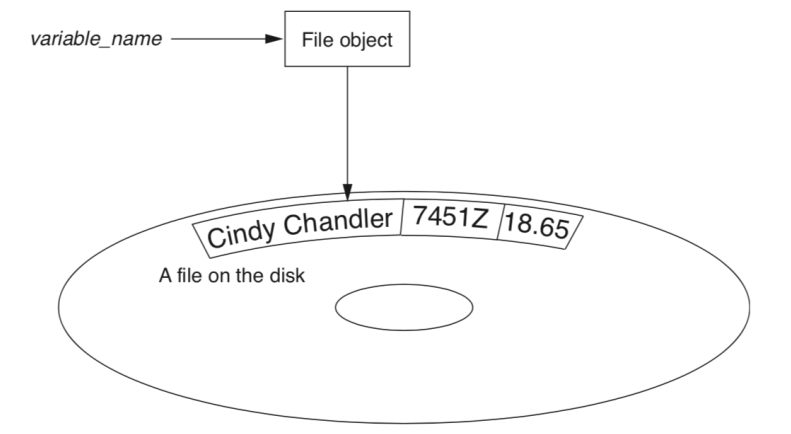
PYTHON FILE WRITE
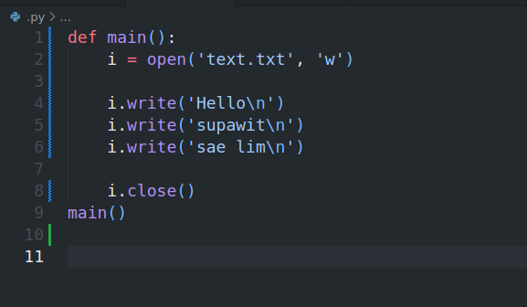
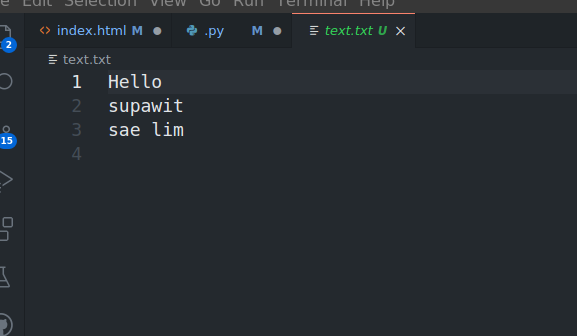
PYTHON FILE READ
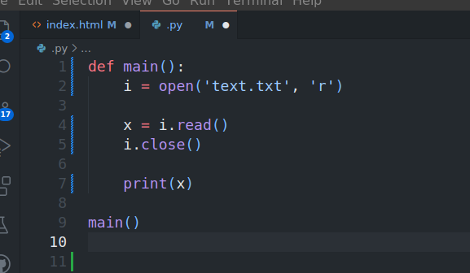
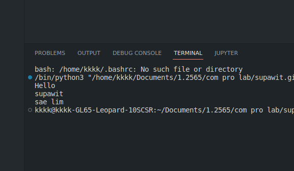
FILE READLINE
The readline method reads a single line from the file. Each time the method is called, it reads the next line in the file.
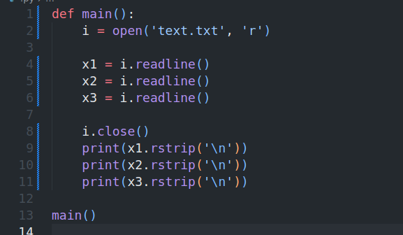
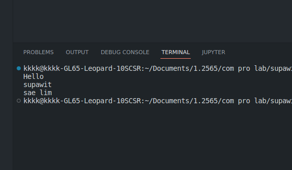
WRITE NUMBERS
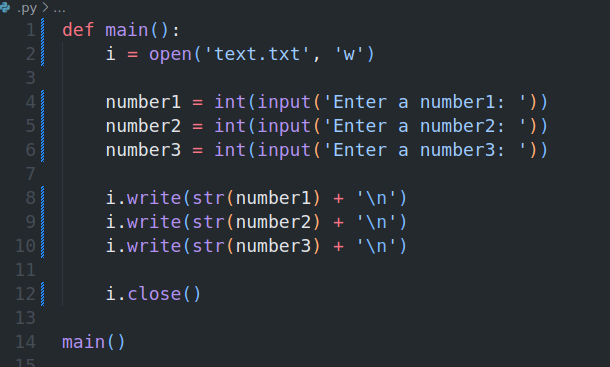
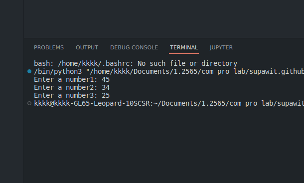
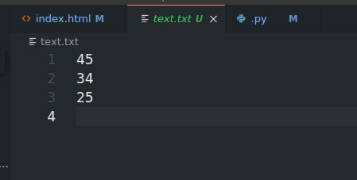
READ NUMBERS
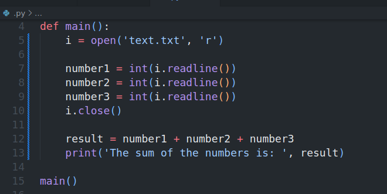
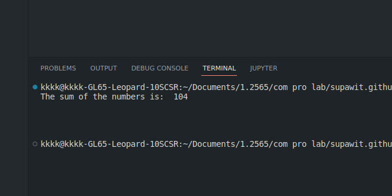

-
USING LOOPS TO WRITE FILE
We can use a loop to read the lines in a file. The loop continues until the end of the file is reached.(empty string is returned.)
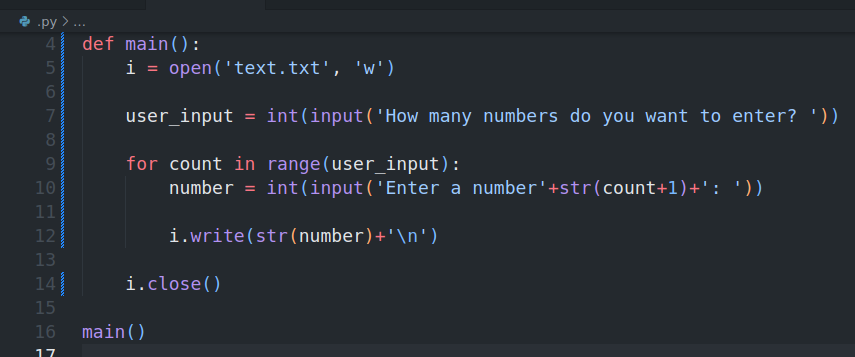
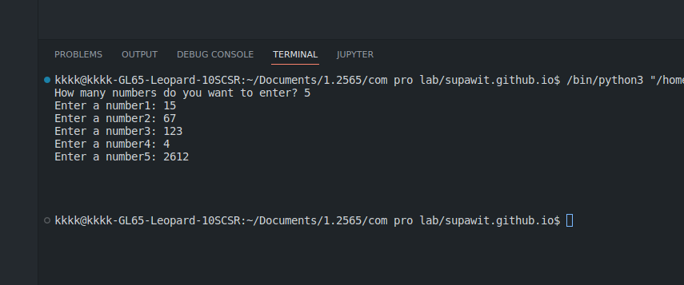
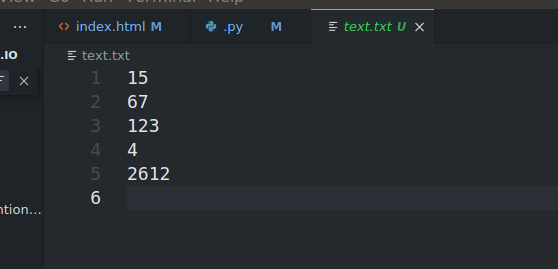
USING LOOP TO READ FILE
-
Use For
-
Use While
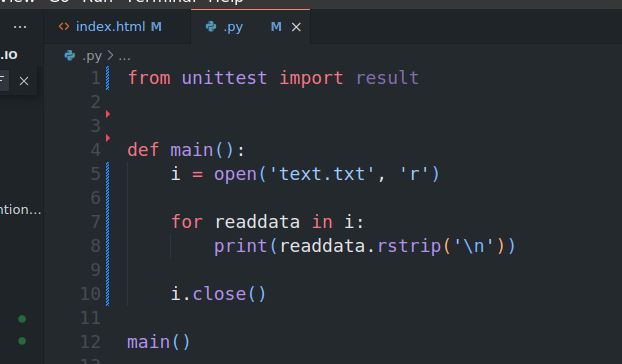
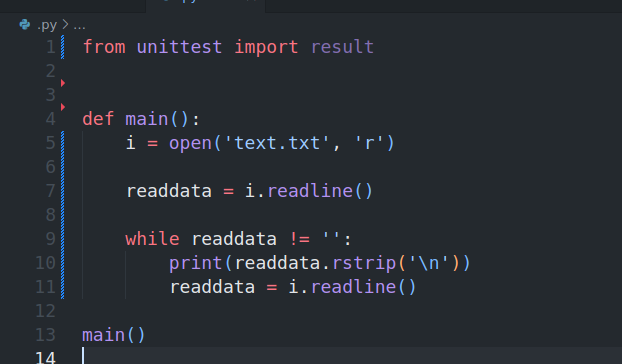
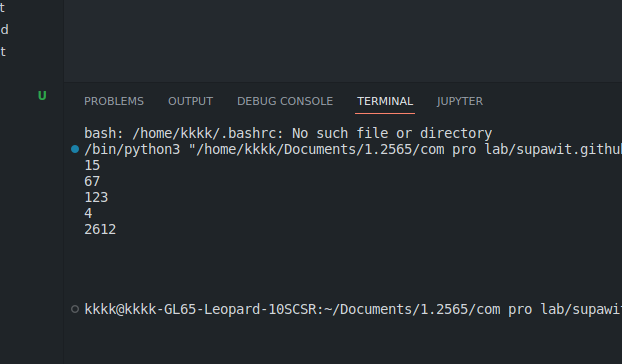
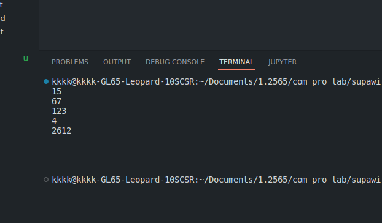
PROCESSING RECORD
When working with records,Important to be able this.
- Add records
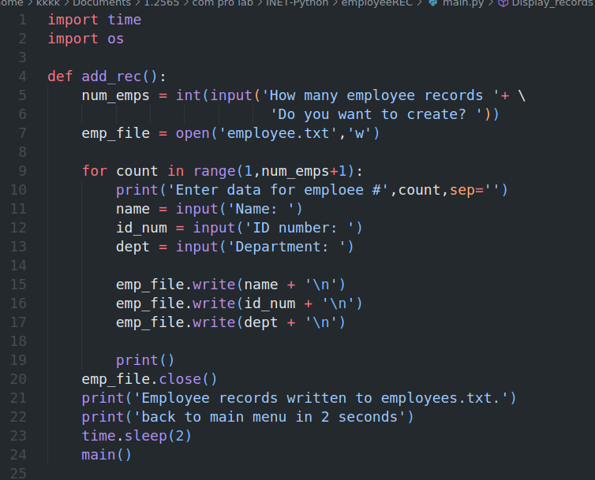
- Display records
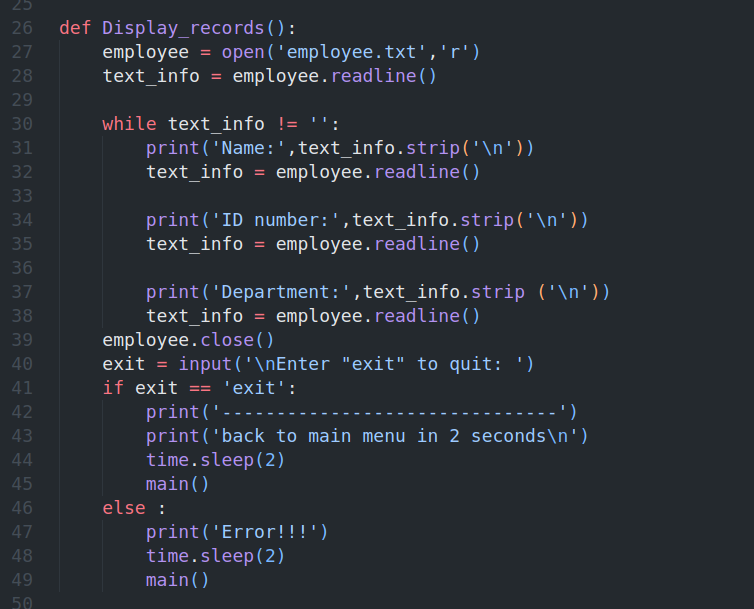
- Search specific record
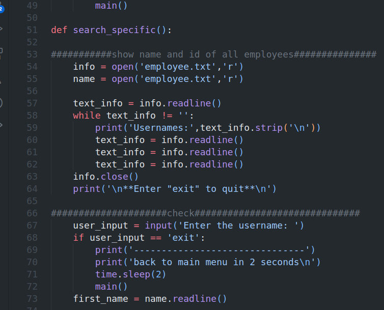
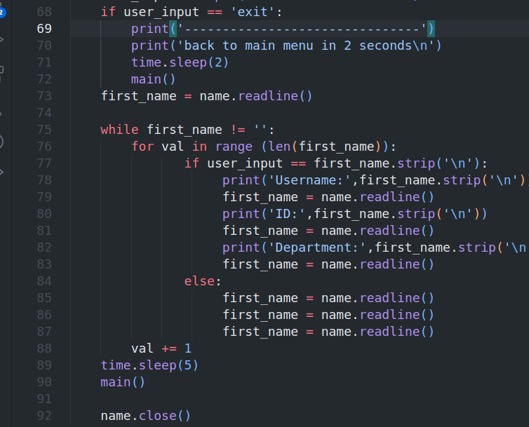
- Modify record
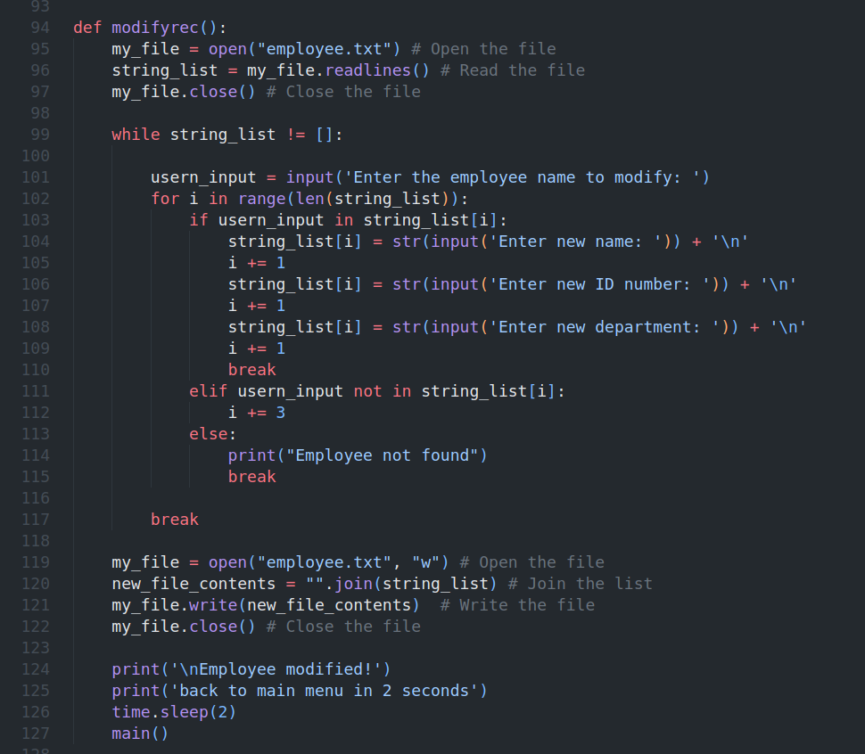
- Delete record
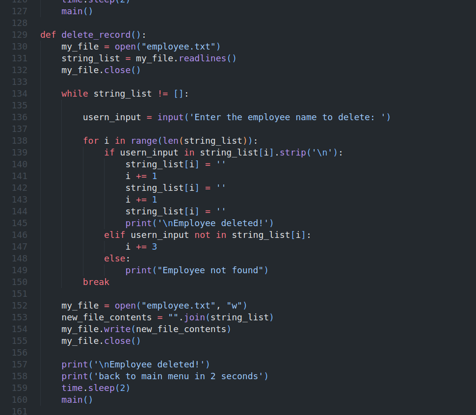
REMOVE,RENAME
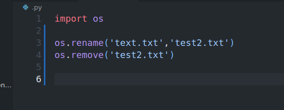
-
EXCEPTIONS
An exception is an error that occurs during the execution of a program. When an exception occurs, the program stops and displays an error message.

Example1
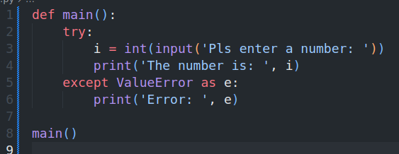
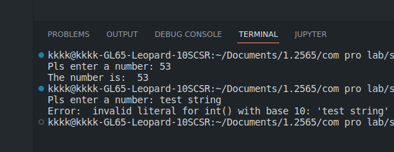
If statement in try suite is true, the except suite is skipped.
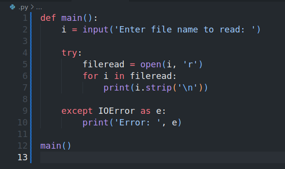
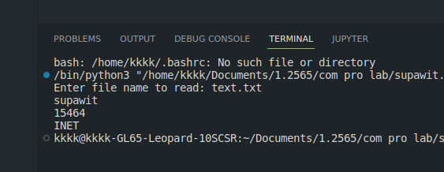
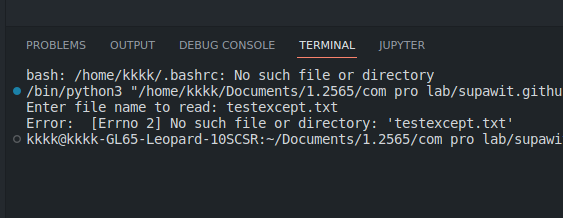
Example2
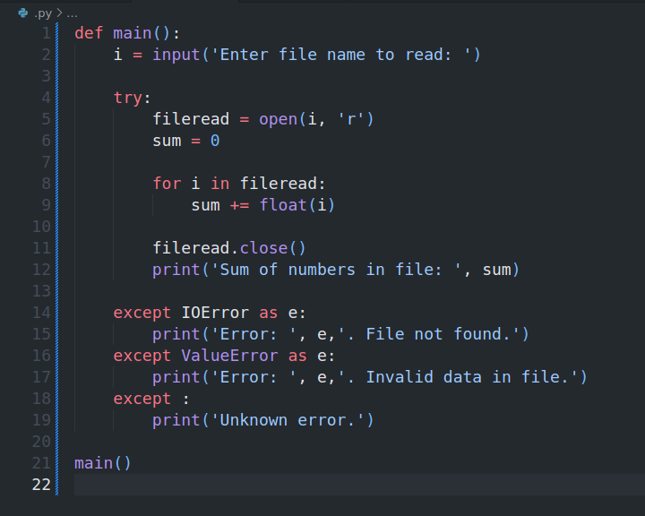
-
ELSE CLAUSE
The else clause is executed if the try clause does not raise an exception. if the try clause raises an exception, the else clause is skipped.
Example
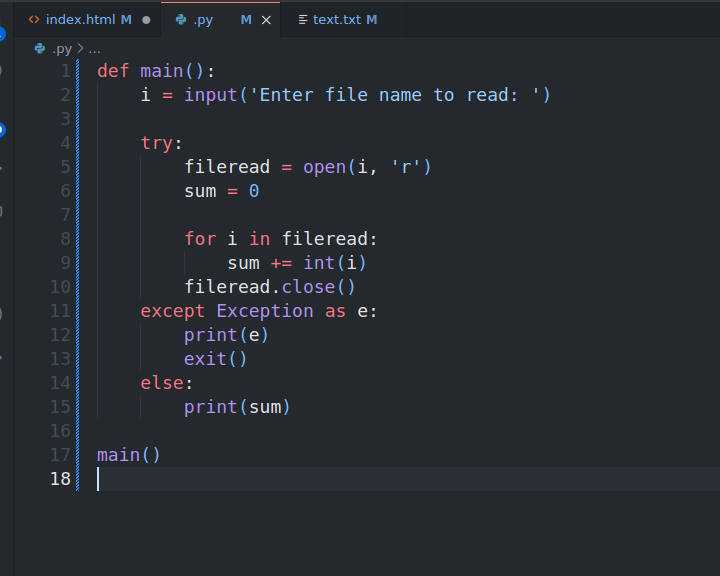
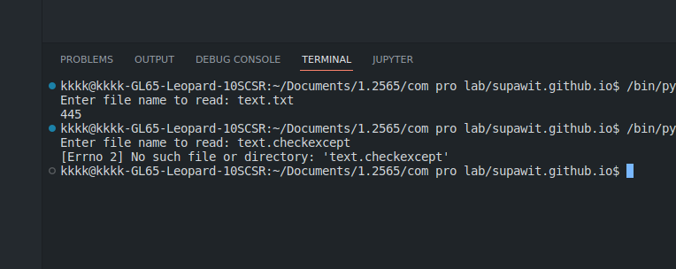
-
FINALLY CLAUSE
The finally clause is always executed before leaving the try statement, whether an exception has occurred or not. When an exception has occurred in the try clause and has not been handled by an except clause (or it has occurred in an except or else clause), it is re-raised after the finally clause has been executed. The finally clause is also executed “on the way out” when any other clause of the try statement is left via a break, continue or return statement.
Example
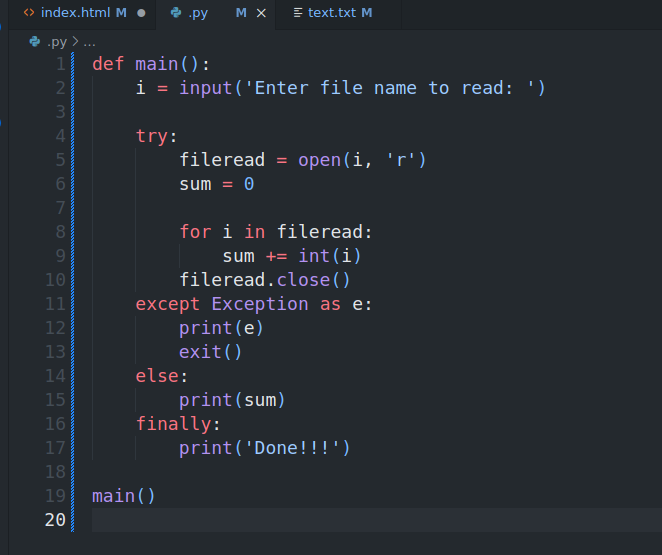
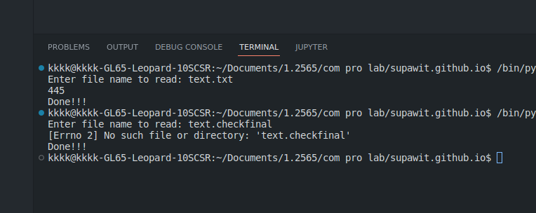
If exception is not handled
If an exception occurs and is not handled by an except clause, it is passed on to the next enclosing try statement. If no handler is found, the exception is an unhandled exception and execution stops with a message as shown below.
Thanks ! Goodluck
If you have any questions, please feel free to contact me.